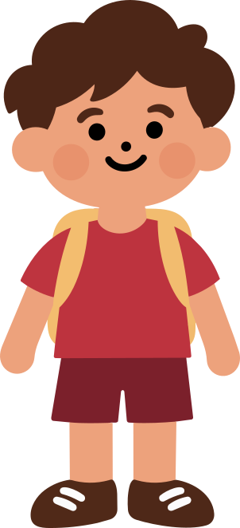

Usa lo que tienes en casa
JUEGO
¿Qué le mando
¿Qué le mando
de lunch?
Arma un lunch con lo que tienes en casa y descubre distintas opciones para tu día.
Para quien prepara el lunch. Mamá, papá, abuela, abuelo u otra persona cuidadora.
Lista en pocos pasos

Encuentra distintas combinaciones
Descubre nuevas ideas para el lunch
Paso 1 de 3
¿Cuánto tiempo tienes hoy?
Te mostraremos opciones que puedan adaptarse a tu tiempo.
Paso 2 de 3
¿Qué tienes disponible?
Selecciona los alimentos que tienes en casa.
¿Hay algo que no acepta? Opcional
Selecciona una o más opciones. Lo tendremos en cuenta al generar los lunches.
Paso 3 de 3
¡Aquí están tus opciones!
Con lo que tienes y el tiempo disponible, puedes preparar:
DETALLE DE TU LUNCH
¿Por qué puede funcionar?
ESPECIALISTA ITASO
Una opción que puedes hacer tuya
Esta opción combina un alimento principal, una guarnición y una bebida. Puedes adaptarla según tu tiempo, lo disponible en casa y las preferencias de tu familia.
Si no tienes esto…
Puedes sustituir algún ingrediente por otro similar que ya tengas en casa.
Si no le gusta…
Prueba otra presentación o una alternativa que ya conozca y acepte.
Recuerda
No necesitas preparar el lunch perfecto. Pequeños cambios y distintas combinaciones pueden ayudarte a variar lo que lleva.